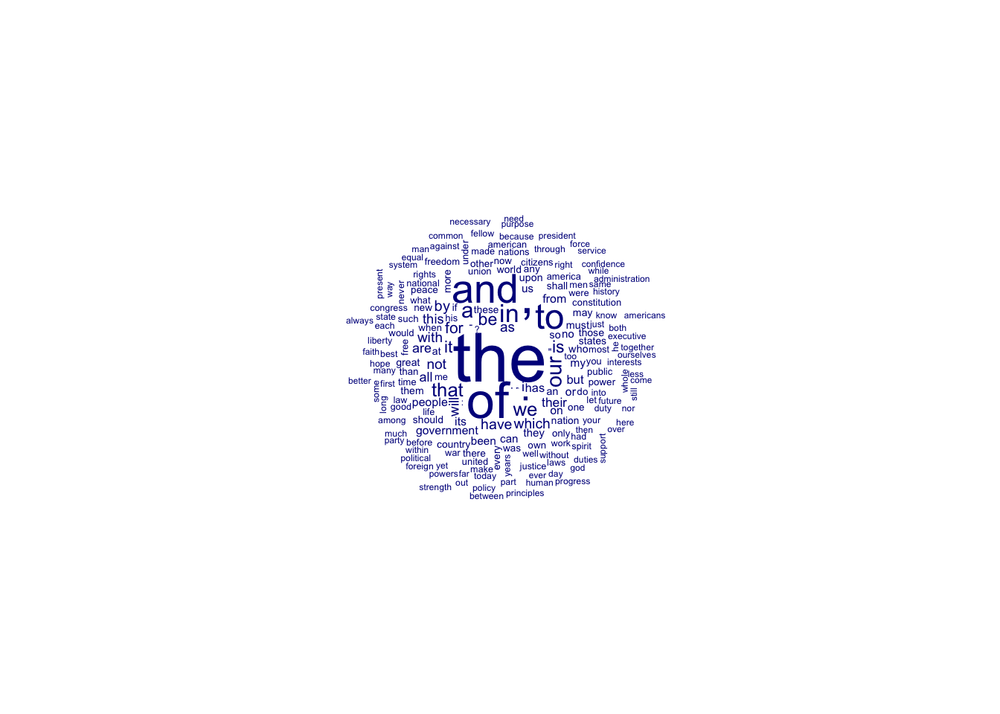

On social media platforms, text is often one of the most prevalent forms of data you will come across, in the shape of posts or comments. Similarly, textual data plays a significant role in social science, spanning from political discussions and newspaper archives to open-ended survey questions and reviews. We will be mainly using stringr package and glue package in the tidyverse to wrangle textual data in this tutorial. And we will mainly use quanteda for textual analysis (an alternative choice could be tidytext.
── Attaching core tidyverse packages ──────────────────────── tidyverse 2.0.0 ──
✔ dplyr 1.1.0 ✔ readr 2.1.4
✔ forcats 1.0.0 ✔ stringr 1.5.0
✔ ggplot2 3.4.3 ✔ tibble 3.1.8
✔ lubridate 1.9.2 ✔ tidyr 1.3.0
✔ purrr 1.0.2
── Conflicts ────────────────────────────────────────── tidyverse_conflicts() ──
✖ dplyr::filter() masks stats::filter()
✖ dplyr::lag() masks stats::lag()
ℹ Use the conflicted package (<http://conflicted.r-lib.org/>) to force all conflicts to become errors
Pre-processing text
Understanding text as a string of characters
In the previous tutorials, we have talked about various data types such as integer, numeric, factor, etc. Today we will delve into string (or character), which could be stored in multiple formats, such as txt, csv or json. When we think about text, we might think of sentences or words, but the computer only “thinks” about letters: text is represented internally as a string of characters.
Note
Technically speaking, text is represented as bytes (numbers) rather than characters. The Unicode standard determines how these bytes should be interpreted or “decoded.” Here we assume that the bytes in a file are already “decoded” into characters (or Unicode code points), and we can just work with the characters. Especially if you are working with non-English text, it is very important to make sure you understand Unicode and encodings and check that the texts you work with are decoded properly.
text ="This is text."glue("class(text): {class(text)}")
class(text): character
glue("length(text): {length(text)}")
length(text): 1
glue("text[1]: {text[1]}")
text[1]: This is text.
glue("str_length(text): {str_length(text)}")
str_length(text): 13
glue("str_sub(text, 6,7): {str_sub(text, 6,7)}")
str_sub(text, 6,7): is
words =c("These", "are", "words")glue("class(words): {class(words)}")
text <-" <b>Communication</b> (from Latin 'communicare', meaning to share) "cleaned <- text %>%# remove HTML tags:str_replace_all("<b>", " ") %>%str_replace_all("</b>", " ") %>%# remove quotation marks:str_replace_all("'", "") %>%# normalize white space str_squish() %>%# lower casetolower() %>%# trim spaces at start and endtrimws()glue(cleaned)
communication (from latin communicare, meaning to share)
str_length(cleaned)
[1] 56
str_sub(cleaned, 1, 13)
[1] "communication"
str_detect(cleaned, "communication")
[1] TRUE
str_count(cleaned, "communication")
[1] 1
Regular expression
A regular expression or regex is a powerful language to locate strings that conform to a given pattern. For instance, we can extract usernames or email-addresses from text, or normalize spelling variations and improve the cleaning methods covered in the previous section. Specifically, regular expressions are a sequence of characters that we can use to design a pattern and then use this pattern to find strings (identify or extract) and also replace those strings by new ones.
Regular expressions look complicated, and in fact they take time to get used to initially. For example, a relatively simple (and not totally correct) expression to match an email address is [\w\.-]+@[\w\.-]+\.\w\w+, which doesn’t look like anything at all unless you know what you are looking for. The good news is that regular expression syntax is the same in R, Python as well as many other languages, so once you learn regular expressions you will have acquired a powerful and versatile tool for text processing.
Why is it important to learn regex for handling social media data? Social media data is typically quite messy and noisy, requiring extensive cleaning and extraction. However, there is no need to memorize all the expressions. You can refer to the [cheatsheet](https://rstudio.github.io/cheatsheets/strings.pdf for quick reference. Additionally, you can always copy and paste the codes from the tutorials and apply them to other social media platforms, in most cases.
tweets <-data.frame(id =1:4,text =c("RT: @john_doe https://example.com/news VERY interesting! üòÅ","tweet with just text üòâ","http://example.com/pandas #breaking #mustread ","@me and @myself #selfietime"))tweets <- tweets %>%mutate(# identify tweets with hashtagshash_tag=str_extract_all(text, "#\\w+"),# How many at-mentions are there?n_at =str_count(text, "(^|\\s)@\\w+"),mention =str_extract_all(text, "(^|\\s)@\\w+"),# Extract first urlurl =str_extract(text, "(https?://\\S+)"),# Remove at-mentions, tags, and urlsclean_text =str_replace_all(text, "(|^|\\s)(RT: |@|#|https?://)\\S+", " ") %>%str_replace_all("\\W+", " ") %>%tolower() %>%trimws() )tweets
id text
1 1 RT: @john_doe https://example.com/news VERY interesting! üòÅ
2 2 tweet with just text üòâ
3 3 http://example.com/pandas #breaking #mustread
4 4 @me and @myself #selfietime
hash_tag n_at mention url
1 1 @john_doe https://example.com/news
2 0 <NA>
3 #breaking, #mustread 0 http://example.com/pandas
4 #selfietime 2 @me, @myself <NA>
clean_text
1 very interesting
2 tweet with just text
3
4 and
Additionally, you might want to split and joining strings.
text ="apples, pears, oranges"items=strsplit(text,", ", fixed=T)[[1]]items=str_split(text,"\\p{PUNCTUATION}\\s*")[[1]]items=str_extract_all(text,"\\p{LETTER}+")[[1]]print(items)
# You might need to install the `quanteda.corpora` package through github.# install.packages("devtools")# devtools::install_github("quanteda/quanteda.corpora")#install.packages("quanteda.textstats") #install.packages("quanteda.textplots")#install.packages("quanteda.textmodels")library(quanteda)
For the analysis of textual data, we will employ computational textual analysis, also known as natural language processing, or text-as-data, depending on the field. In the previous tutorial, computations are usually done on numerical data. Hence, you must find a way to represent the text by numbers. The document-term matrix (DTM, also called the term-document matrix or TDM) is one common numerical representation of text. It represents a corpus (or set of documents) as a matrix or table, where each row represents a document, each column represents a term (word), and the numbers in each cell show how often that word occurs in that document. Here is an example:
texts <-c("The caged bird sings with a fearful trill", "for the caged bird sings of freedom")dtm <-tokens(texts) %>%dfm()# Inspect by converting to a (dense) matrixconvert(dtm, "matrix")
features
docs the caged bird sings with a fearful trill for of freedom
text1 1 1 1 1 1 1 1 1 0 0 0
text2 1 1 1 1 0 0 0 0 1 1 1
As you can observe from above, it shows a DTM made from two lines from the famous poem by Maya Angelou. The resulting matrix has two rows, one for each line; and 11 columns, one for each unique term (word). In the columns you see the document frequencies of each term: the word “bird” occurs once in each line, but the word “with” occurs only in the first line (text1) and not in the second (text2). The dfm function here (from the quanteda package) can take a vector or column of texts and transforms it directly into a DTM (which quanteda actually calls a document-feature matrix.
Tokenization
In order to turn a corpus into a matrix, each text needs to be tokenized, meaning that it must be split into a list (vector) of words. This seems trivial, as English (and most western) text generally uses spaces to demarcate words. However, even for English there are a number of edge cases. For example, should “haven’t” be seen as a single word, or two? In some other tokenizers, “haven’t” could be splitted into “have” and “n’t” (TreebankWordTokenizer included in the nltk package pf python). Other might silently drops all single-letter words, including the ’t, ’s, and I, which could be problematic in this case, “have’t” to “haven”.
text <-"I haven't seen John's derring-do"tokens(text)
In languages such as Chinese, Japanese, and Korean, which do not use spaces to delimit words, the story is more difficult. For example, below is a case of the famous haiku “the sound of water” by Bashō. Although quanteda’s tokenizer did pretty good in this case, you might want to check out the specific tokenizer when dealing with different languages.
d <-corpus(data_corpus_inaugural) %>%tokens() %>%dfm()d
Document-feature matrix of: 59 documents, 9,441 features (91.84% sparse) and 4 docvars.
features
docs fellow-citizens of the senate and house representatives :
1789-Washington 1 71 116 1 48 2 2 1
1793-Washington 0 11 13 0 2 0 0 1
1797-Adams 3 140 163 1 130 0 2 0
1801-Jefferson 2 104 130 0 81 0 0 1
1805-Jefferson 0 101 143 0 93 0 0 0
1809-Madison 1 69 104 0 43 0 0 0
features
docs among vicissitudes
1789-Washington 1 1
1793-Washington 0 0
1797-Adams 4 0
1801-Jefferson 1 0
1805-Jefferson 7 0
1809-Madison 0 0
[ reached max_ndoc ... 53 more documents, reached max_nfeat ... 9,431 more features ]
data_corpus_inaugural is a collection all US presidential inaugural address texts, and metadata (for the corpus), from 1789 to present, and we just created a document-term matrix from them. You can tell from the meta-data, which lists 59 documents (rows) and 9,439 features (columns).
feature frequency rank docfreq group
1 the 10183 1 59 all
10 we 1827 10 58 all
100 national 158 100 46 all
1000 suffer 15 973 13 all
9000 physicists 1 5509 1 all
features
docs the first justice america people us we
1789-Washington 116 2 0 0 4 1 1
1825-Adams 304 8 4 0 7 4 8
2009-Obama 135 0 0 8 7 23 62
2013-Obama 104 0 2 6 11 21 68
2017-Trump 71 4 1 18 10 2 46
2021-Biden 101 3 5 18 9 27 88
First, we show the overall term and document frequencies of each word, where we showcase words at different frequencies. Unsurprisingly, the word the tops both charts, but further down there are minor differences. In all cases, the highly frequent words are mostly functional words like the or first. More informative words such as investments are by their nature used much less often. Such term statistics are very useful to check for noise in the data and get a feeling of the kind of language that is used.
However, the words that ranked around 1000 in the top frequency are still used in less than half of the documents. Since there are about 8,000 even less frequent words in the corpus, you can imagine that most of the document-term matrix consists of zeros. The output also noted this sparsity in the first output above. In fact, R reports that the DTM is sparse, meaning 91.84% percent of all entries are zero.
Note
Matrices that contain mostly zero values are called sparse, distinct from matrices where most of the values are non-zero, called dense.
DTM as a “Bag of Words”
As you can see already in these simple examples, the document-term matrix discards quite a lot of information from text. Specifically, it disregards the order or words in a text: “John fired Mary” and “Mary fired John” both result in the same DTM, even though the meaning of the sentences is quite different. For this reason, a DTM is often called a bag of words, in the sense that all words in the document are simply put in a big bag without looking at the sentences or context of these words.
Thus, the DTM can be said to be a specific and “lossy” representation of the text, that turns out to be quite useful for certain tasks: the frequent occurrence of words like “employment”, “great”, or “I” might well be good indicators that a text is about the economy, is positive, or contains personal expressions respectively. If a president uses the word “terrorism” more often than the word “economy”, that could be an indication of their policy priorities. The DTM representation can be used for many different text analyses, from dictionaries to supervised and unsupervised machine learning. Sometimes, however, you need information that is encoded in the order of words. For example, in analyzing conflict coverage it might be quite important to know who attacks whom, not just that an attack took place. Then we need to get into more advance representation of text, such as word embedding.
Pre-processing/Cleaning (stop words, punctuation, numbers, lowercasing, stemming or lemmatization, etc)
d <-corpus(data_corpus_inaugural) %>%tokens() %>%dfm()textplot_wordcloud(d, max_words=200)

A first step in cleaning a DTM is often stop word removal. Words such as “a” and “the” are often called stop words, i.e. words that do not tell us much about the content. However, we need to be more cautious about the stop wordsd list. As an example of the substantive choices inherent in using a stop word lists, consider the word “will”. As an auxiliary verb, this is probably indeed a stop word: for most substantive questions, there is no difference whether you will do something or simply do it. However, “will” can also be a noun (a testament) and a name (e.g. Will Smith). Simply dropping such words from the corpus can be problematic. In some cases, some research questions might actually be interested in certain stop words. If you are interested in references to the future or specific modalities, the word might actually be a key indicator. Similarly, if you are studying self-expression on Internet forums, social identity theory, or populist rhetoric, words like “I”, “us” and “them” can actually be very informative. Additionally, you can also customize your own stop word list.
Next to stop words, text often contains punctuation, numbers, symbol, hyphens, and other things that can be considered “noise” for most research questions. For example, it could contain emoticons or emoji, Twitter hashtags or at-mentions, or HTML tags or other annotations. Meanwhile, it is a common practice to lowercase the tokens.
Last, we need to consider stemming and lemmatization in the pre-processing. Stemming is the process of reducing infected words to their stem. For instance, stemming with replace words “history” and “historical” with “histori”. Similarly, for the words finally and final, the base word is “fina”. In a lot of cases (i.e., sentiment analysis), getting base word is important to know whether the word is positive or negative. The purpose of lemmatization is same as that of stemming but overcomes the drawbacks of stemming. In stemming, for some words, it may not give may not give meaningful representation such as “Histori”. Here, lemmatization comes into picture as it gives meaningful word.
Lemmatization takes more time as compared to stemming because it finds meaningful word/ representation. Stemming just needs to get a base word and therefore takes less time.
Stemming
Lemmatization
Stemming is a process that stems or removes last few characters from a word, often leading to incorrect meanings and spelling.
Lemmatization considers the context and converts the word to its meaningful base form, which is called Lemma.
Example: stemming the word ‘Caring’ would return ‘Car’.
Example: lemmatizing the word ‘Caring’ would return ‘Care’.
Stemming is used in case of large dataset where performance is an issue.
Lemmatization is computationally expensive since it involves look-up tables and what not.
Document-feature matrix of: 2 documents, 6 features (50.00% sparse) and 0 docvars.
features
docs eat eater ate tax my return
one 2 2 1 0 0 0
two 0 0 0 4 1 1
txt <-c("I am going to lemmatize makes into make, but not maker")# stemmingtokens_wordstem(tokens(txt))
dfm_weight_pres <- data_corpus_inaugural %>%corpus_subset(Year >2000) %>%tokens(remove_punct =TRUE) %>%tokens_remove(stopwords("english")) %>%dfm() %>%dfm_weight(scheme ="prop")# Calculate relative frequency by presidentfreq_weight <-textstat_frequency(dfm_weight_pres, n =10, groups = dfm_weight_pres$President)ggplot(data = freq_weight, aes(x =nrow(freq_weight):1, y = frequency)) +geom_point() +facet_wrap(~ group, scales ="free") +coord_flip() +scale_x_continuous(breaks =nrow(freq_weight):1,labels = freq_weight$feature) +labs(x =NULL, y ="Relative frequency")
Collocation analysis
toks <-corpus(data_corpus_inaugural) %>%tokens(remove_punct = T) col <- toks %>%tokens_remove(stopwords("en")) %>%tokens_select(pattern ="^[A-Z]", valuetype ="regex", case_insensitive =FALSE, padding =TRUE) %>%textstat_collocations(min_count =5, tolower =FALSE)col
collocation count count_nested length lambda z
1 United States 158 0 2 8.477149 27.929888
2 Federal Government 32 0 2 5.401997 21.196633
3 Chief Justice 14 0 2 8.740786 18.100926
4 Almighty God 15 0 2 6.879013 17.672882
5 Mr Chief 9 0 2 7.426440 16.193146
6 North South 10 0 2 8.551340 15.667999
7 Constitution United 19 0 2 3.835956 15.233607
8 World War 6 0 2 7.697471 14.091753
9 Mr Vice 5 0 2 7.168344 12.776044
10 Justice Mr 5 0 2 6.669358 12.702532
11 National Government 11 0 2 5.524524 12.497626
12 Mr Speaker 5 0 2 8.015733 12.059646
13 United Nations 9 0 2 6.752797 11.689890
14 Old World 10 0 2 10.898295 11.620480
15 Chief Magistrate 10 0 2 10.120438 11.203691
16 Father Country 5 0 2 11.139123 10.459320
17 Western Hemisphere 5 0 2 11.139123 10.459320
18 South America 6 0 2 4.481760 10.027368
19 President United 8 0 2 3.678079 9.996520
20 Thank God 5 0 2 7.408127 9.618008
21 Southern States 6 0 2 5.673082 9.213078
22 Federal Union 5 0 2 3.806929 8.386138
23 Declaration Independence 8 0 2 13.520351 8.102662
24 District Columbia 5 0 2 13.085079 7.752972
25 Vice President 18 0 2 10.378109 7.217968
26 George Washington 5 0 2 10.469830 7.010152
27 General Government 24 0 2 9.267504 6.481981
28 President Bush 6 0 2 9.173255 6.234166
29 America America 6 0 2 2.444162 6.030211
30 Constitution Union 5 0 2 2.615266 5.931796
31 Government Union 6 0 2 2.293547 5.655374
32 States America 7 0 2 2.044860 5.435018
33 Government United 5 0 2 1.908017 4.365975
Trump’s tweets
In the example(s) above, we have been working with the presidential inaugural address texts. However, it is important to note the differences when compared to social media data, which can be considerably messier and noisier due to the presence of abbreviations, internet slang, emojis, and etc. Now, let’s play with some social media data. The dataset we’ll be using is from the Trump Twitter Archive, which compiles Donald Trump’s tweets dating back to 2016 (until before his account was suspended).